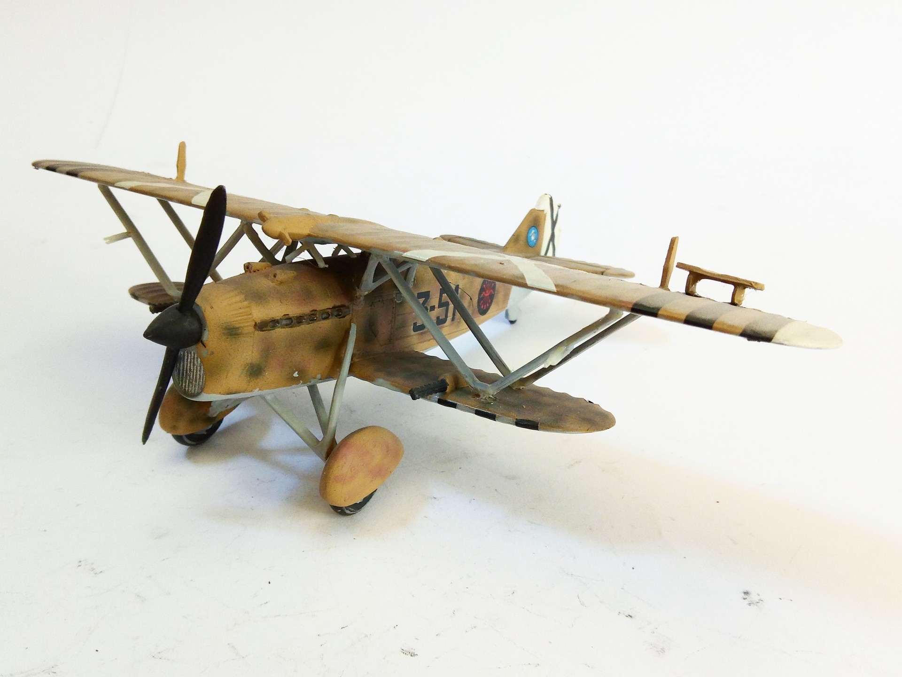
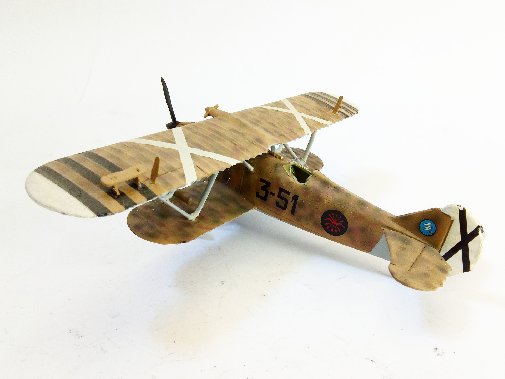

Aerei · scale model archive
Fiat CR32 Freccia
Fiat CR32 Freccia — Kit: SMER, Scale: 1/48. Spanish civil war '1/48 #SMER

Photo gallery

English description
Spanish civil war
'1/48 #SMER
Descrizione italiana
Spanish civil war.
'1/48.